Давайте посмотрим, как в Андроид приложениях формируется то, что мы видим на экране.
Если проводить аналогию с Windows, то приложение состоит из окон, называемых Activity. В конкретный момент времени обычно отображается одно Activity и занимает весь экран, а приложение переключается между ними. В качестве примера можно рассмотреть почтовое приложение. В нем одно Activity – список писем, другое – просмотр письма, третье – настройки ящика. При работе вы перемещаетесь по ним.
Содержимое Activity формируется из различных компонентов, называемых View. Самые распространенные View - это кнопка, поле ввода, чекбокс и т.д.
Примерно это можно изобразить так:
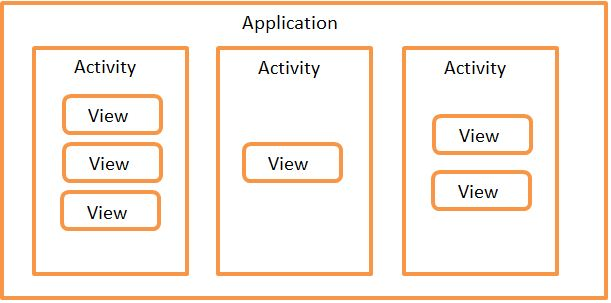
Необходимо заметить, что View обычно размещаются в ViewGroup. Самый распространенный пример ViewGroup – это Layout. Layout бывает различных типов и отвечает за то, как будут расположены его дочерние View на экране (таблицей, строкой, столбцом …)
Подробней об этом можно почитать в Документации
Также, в версии 3.0 в Android появилась новая сущность – Fragment. Но тему фрагментов мы рассмотрим в более поздних уроках, чтобы сейчас не усложнять материал.
Наверно уже запутал новыми словами и терминами, давайте посмотрим это все на практике.
Создадим приложение к этому уроку. Для этого запускайте Android Studio и открывайте проект Android lessons, который мы создали на прошлом уроке. Скорее всего, этот проект сразу откроется у вас по умолчанию.
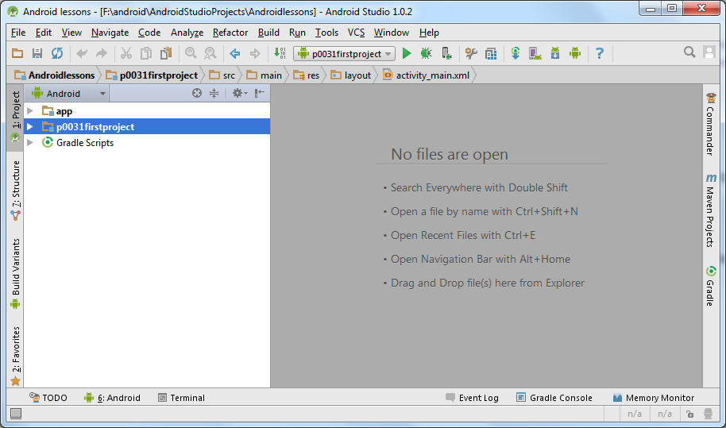
Напомню, что мы решили создавать в этом проекте все модули (приложения) для уроков. А не создавать отдельный проект под каждый урок.
Создадим модуль. В меню File > New Module. Все шаги аналогичны тем, что мы проделывали на прошлом уроке, только будут другие названия приложения и модуля
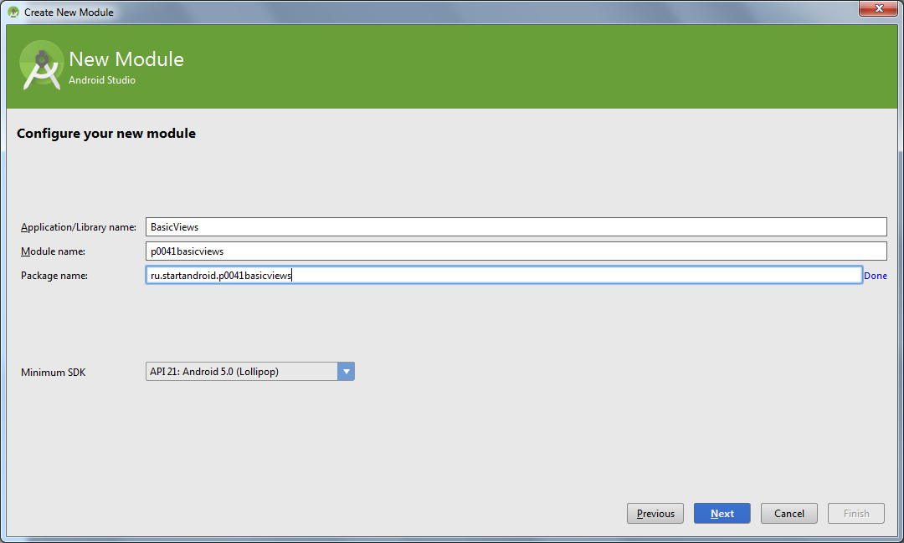
Application/Library name: BasicViews
Module name: p0041basicviews
Package name: ru.startandroid.p0041basicviews
Модуль p0041basicviews создан и виден в списке модулей слева:
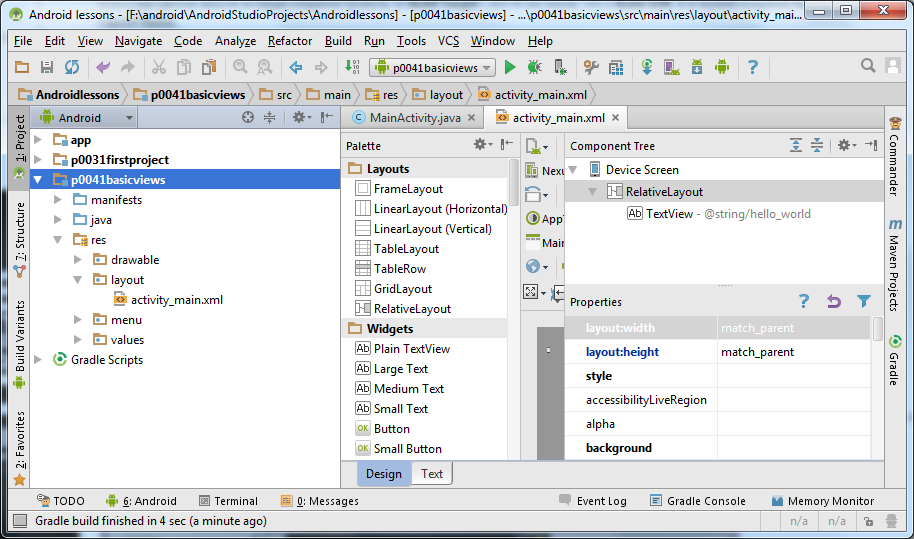
В нашем модуле нам интересен файл: res > layout > activity_main.xml
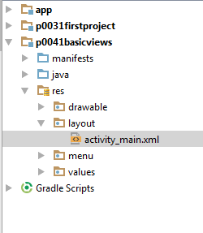
Это layout-файл. В нем мы определяем набор и расположение элементов View, которые хотим видеть на экране. При запуске приложения, Activity читает этот файл и отображает нам то, что мы настроили. Скорее всего, он у вас уже открыт на редактирование, но на всякий случай давайте еще раз откроем его двойным кликом и посмотрим, какой набор View он содержит по умолчанию.
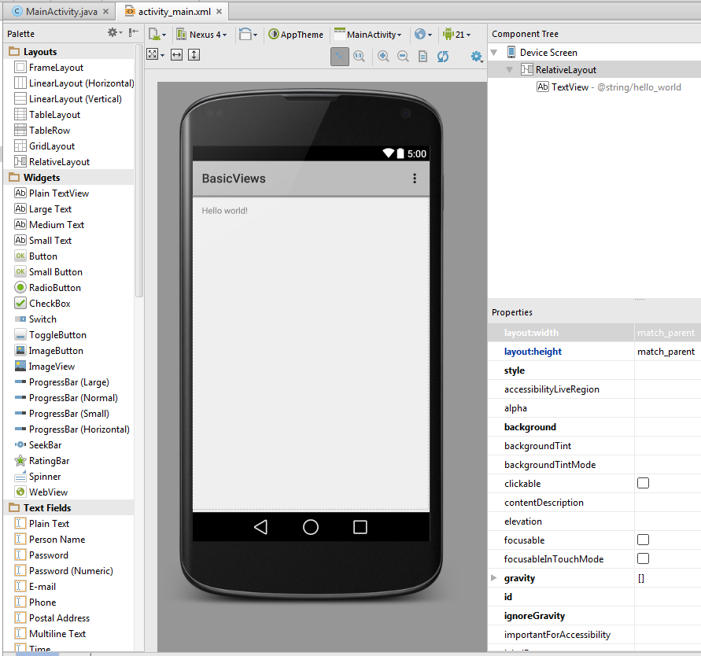
Слева видим список View, разделенный на группы. Здесь отображены все View-элементы, которые вы можете использовать в своих приложениях.
Обратим внимание на белый экран. Мы видим, что на экране сейчас присутствует элемент с текстом Hello world! Чтобы узнать, что это за View нажмите на этот текст.
Справа во вкладке Component Tree вы видите все элементы, которые описаны в этом layout-файле.
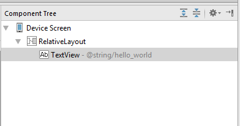
Видим, что выделенный нами элемент – это TextView. Это элемент, который умеет отображать текст. Обратите внимание, что он вложен в элемент RelativeLayout – это один из видов ViewGroup, про которые я писал выше.
Добавим еще элементов на экран, пусть это будут Button и CheckBox. Для этого просто найдите в списке слева и перетащите на экран вашего будущего приложения. Также можно перетащить их на RelativeLayout во вкладке Component Tree, результат будет почти тот же. Кроме Button и CheckBox, добавим еще на экран Plain Text из группы Text Fields.
После этих манипуляций ваш экран будет выглядеть примерно так:
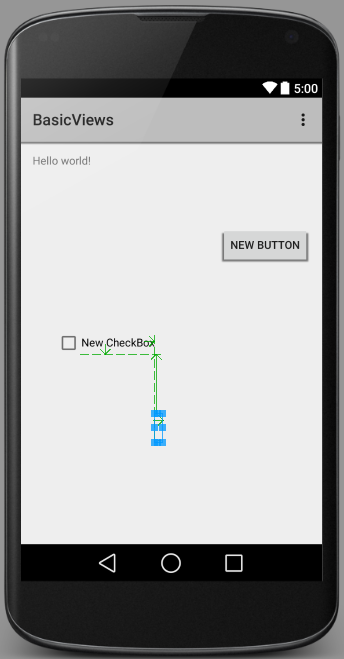
В Component Tree они появятся под названиями button, checkBox и editText.

Это ID, которые им были присвоены автоматически. Пока оставим их такими, позднее научимся их менять и будем делать более осмысленными.
Теперь давайте изменим надписи на компонентах нашего экрана. Во вкладке Component Tree жмем на textView. Теперь нам нужна вкладка Properties. Она отображает свойства выделенного в Component Tree или на экране View-элемента. Располагается она обычно сразу под Component Tree.
Найдем во вкладке Properties свойство text. Сейчас там стоит ссылка на текстовую константу. Где создаются эти константы мы рассмотрим в следующих уроках, а пока просто давайте напишем сюда свой текст: «Some text»
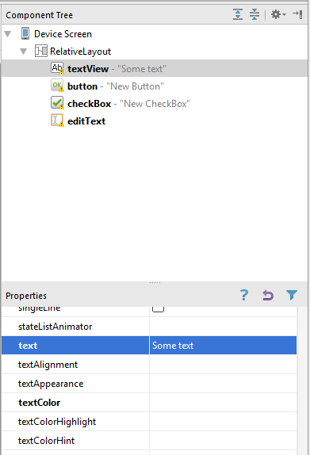
Аналогично измените свойство text для элементов button, checkBox и editText на свои придуманные тексты (можно на русском языке).

Вся эта конфигурация экрана сохранится в файле activity_main.xml.
Теперь давайте запустим приложение. Для этого надо выбрать ваш модуль в списке доступных и нажать чуть правее на зеленый треугольник.
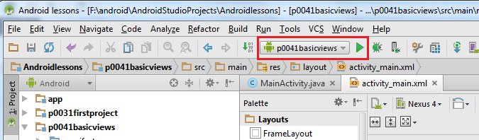
Студия спросит вас, запускать ли эмулятор
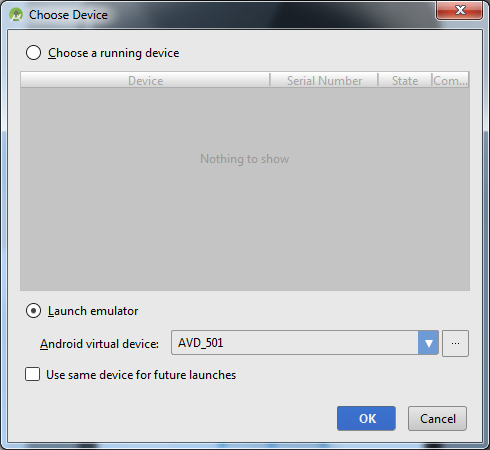
жмите OK
После этого можно откинуться на спинку кресла и отдохнуть. Потому что минуты 2 будет запускаться эмулятор, потом еще минут 5 он будет грузиться. Если хотите быстрее, то напоминаю, что существует альтернатива – Genymotion.
Эмулятор запустился, снимаем блокировку и видим:
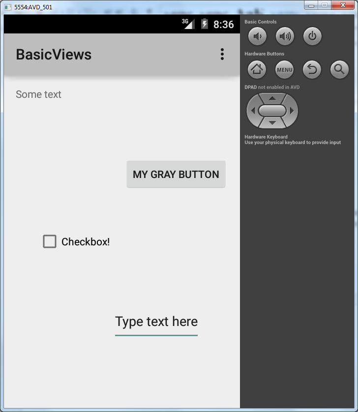
Приложение отображает нам MainActivity, а оно в свою очередь читает файл activity_main.xml и отображает все View, которые мы в нем создавали и настраивали.